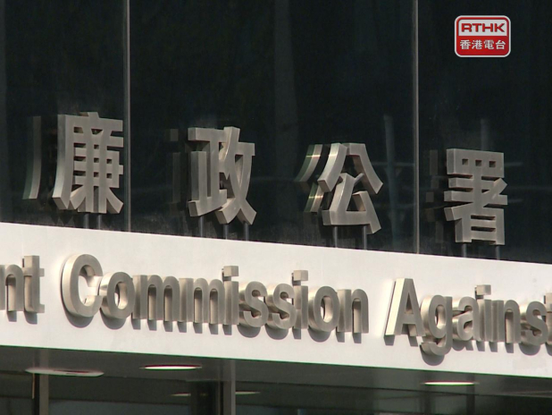
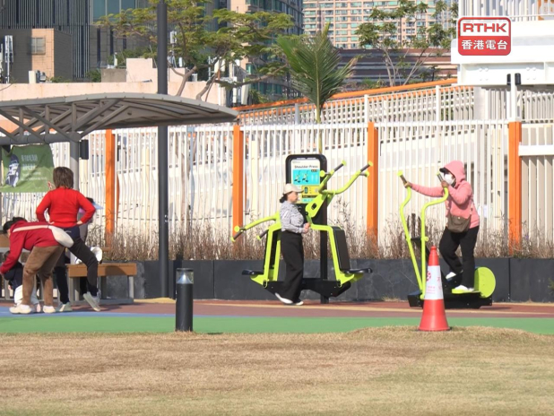
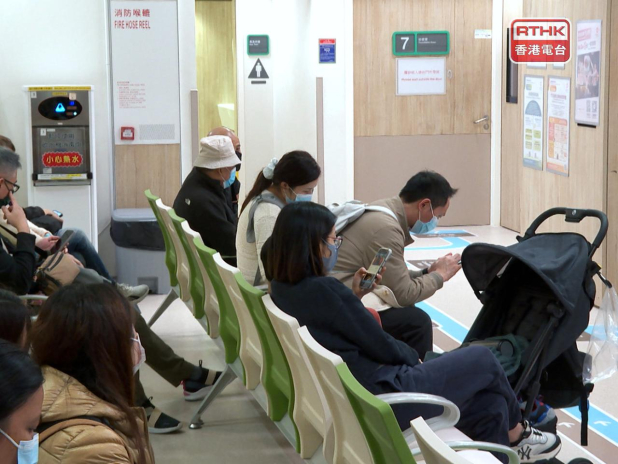
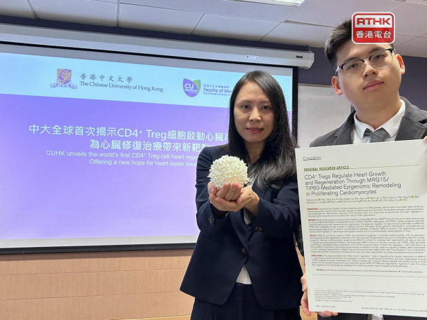

1. 林家謙自揭單身太久 需向魏浚笙學習結識異性 mingpao
2026-01-02 15:58 HKT
林家謙昨晚（1日）於《2025年度叱咤樂壇流行榜頒獎典禮》榮獲「作曲人大獎」及「唱作人金獎」。
他受訪時表示，雖未能奪得歌曲獎項，但心中已有屬於自己的肯定，「自己有自己最喜愛的歌曲，就是去年翻唱薰妮姐姐的《每當變幻時》。」
2. 特區政府多名局長稱習近平新年賀詞帶來鼓舞 全力拼經濟謀發展 RTHK
2026-01-02 15:44 HKT
特區政府多名局長在社交平台撰文回應國家主席習近平日前發表的新年賀詞。
商務及經濟發展局局長丘應樺表示，主席一番話尤如一支強心針，對新一年工作帶來極大鼓舞。
過去一年，地緣政治和貿易戰等帶來不確定性和憂慮，香港再次展現強大韌力，經濟發展穩步向上。
駐港公司數目創新高至近萬家，貨物出口持續錄得按年雙位數增長，全力發揮國家「十四五」規劃賦予香港作為國際貿易中心的角色。
今年會繼續全力促進貿易和投資，拼經濟、謀發展，砥礪前行，為香港經濟發展開闢更廣闊道路。
發展局局長甯漢豪說，中央對香港的堅實支持就是奮勇向前的最強後盾和最大底氣。
她會帶領發展局團隊與新一屆立法會緊密合作，深化改革，提升治理效能，其中包括完成檢視《建築物條例》及提出修訂，並完善執行環節，加強保障樓宇安全。
發展局亦會更主動對接國家發展戰略，落實一系列加快北部都會區發展的措施。
公務員事務局局長楊何蓓茵說，感謝習近平對香港的支持、關心和重視，這令她和公務員團隊深受鼓舞。
公務員團隊作為政府治理體系的重要部分，也要奮發作為，發揮制度優勢，以迎接各項機遇和挑戰。
民政及青年事務局局長麥美娟表示，在習近平的新年賀詞中，深刻感受到國家發展的潛力和機遇，為香港的青年人描繪了一幅充滿希望的藍圖。
民青局將繼續致力為青年人創造更多成長與交流的機會，通過各種計劃和平台幫助他們擴展視野和提升能力。
3. 星凱．堤岸開放戶售420萬 兩個月帳賺一成 mingpao
2026-01-02 15:43 HKT
物業市場氣氛正面，交投市況不俗；中原首席分區營業經理陳韻兒表示，火炭新晉屋苑星凱．堤岸，新近錄得第1座低層C室易手，實用面樍228方呎開放式間隔，原業主叫價約430萬元，雙方議價後減10萬元或2%、以420萬元沽出，實價18,421元，新買家為上車客；原業主2025年11月以385萬元購入，持貨只約兩個月，現轉手帳面獲利約35萬元、單位期內升值約9%。
4. 英超｜曼城新一年首仗悶和新特蘭中止連勝 被阿仙奴拉開4分 利物浦再和列斯聯 mingpao
2026-01-02 15:40 HKT

英超今晨（2日）4場比賽均和氣收場，其中曼城作客新特蘭以及利物浦主場對列斯聯等3仗均悶和0：0。
「藍月」結束各賽事八連勝走勢，未能在新一年打響頭炮後，被榜首阿仙奴拉開分差至4分。
曼城上月主場對新特蘭大勝3：0，但今場作客光明球場控球率高達68%，14次攻門都未能造成入球。
開賽6分鐘先有隊長貝拿度施華門前射門但越位在先，之後菲爾科頓及首席射手艾寧夏蘭特的射門均無功而還，半場互無紀錄。
藍月下半場換入養傷兩個月復出的中場洛迪卡斯簡迪，入替傷出的尼高干沙利斯，及後翼鋒沙雲奴有兩次良機分別門前射高及單刀起腳乏力，被新特蘭門將羅夫斯用腳擋出；加上藍月門將基安盧基當拿隆馬亦在上、下半場各作出一次關鍵撲救，終雙方打和0：0各得1分。
曼城被中止各賽事八連勝，賽後19戰41分，落後榜首阿仙奴4分。
領隊哥迪奧拿承認球隊錯失不少入球機會導致失分，但讚揚新特蘭表現非常出色，因此接受取得1分的結果，並希望麾下盡快調整心態，以迎接下周一迎戰車路士的硬仗。
英超新年周中快車除了阿仙奴全取3分，排第2至7名的上半版球隊均失分。
利物浦繼上月作客被列斯聯逼和3：3後，今場坐陣晏菲路球場再次對壘，同樣控球率近七成及多達19次攻門，加上列斯聯前鋒卡維特利雲完場前掃入因越位「食詐糊」，最終只能悶和0：0，亦是「紅軍」主帥史諾接手一季半首次在英超與對手互交白卷，他認為今仗球隊表現內容，只是差一個入球。
對於前鋒伊基迪基在禁區內攻門時敵衛疑有犯規，史諾笑言若這名法籍前鋒當時倒地的話，也許會博得12碼，惟認可其態度，「如果他倒地就很可能是紅牌加12碼，這或會大大增加勝出的機會，但球員選擇繼續站着，這就是我們球隊的特質」。
至於熱刺主帥法蘭克首次重返賓福特主場倒戈，最終亦只能踢成0：0和氣收場。
翼鋒班倫莊臣未列大軍名單，據報已完成體測將轉投水晶宮，轉會費為3350萬鎊（約3.43億港元）。
而其「準東家」水晶宮則完場被富咸逼和1：1。
5. 吳釗燮助理涉「共諜」案 立院通過要求請辭 mingpao
2026-01-02 15:34 HKT

台灣民眾黨立法院黨團去年7月提案指出，國安會秘書長吳釗燮心腹涉「共諜」案泄漏外交機密，嚴重傷害台灣利益，顯已不適任，建請立法院會作成決議，要求吳釗燮自行請辭下台。
台灣立法院會今天（1月2日）開會處理時，藍白陣營挾人數優勢在表決戰中勝出，照案通過。
（中央社）
6. 2026馬年｜全港商場利是封換領攻略 新地五大商場推 「錦鯉迎春御吉祥」利是封【不斷更新】 mingpao
2026-01-02 15:20 HKT
馬年將至，各大商場爭相推出多款精美的利是封，《明報》整合多個商場利是封換領方法供讀者參考。
7. 新年即錄大額成交 緹外4房特色戶逾1.76億沽 mingpao
2026-01-02 15:19 HKT
踏入新一年，新盤市場即錄大額市區豪宅成交；嘉里（0683）旗下九龍半山龍駒道、屬現樓的緹外，據成交紀錄冊顯示，新錄2026年首宗成交，招標售出第2座1樓A室，實用面積4398方呎4房4套間隔、連255方呎前庭，連車位成交價1.768億元、實呎4.02萬元，買家需於今年4月2日或之前完成交易，但可提前入住，並可獲4.25%梲項津貼。
8. 泳兒入行20周年盼開個唱 如願望實現可以更性感 mingpao
2026-01-02 15:16 HKT
泳兒昨晚（1日）憑歌曲《無糖可樂》於《2025年度叱咤樂壇流行榜頒獎典禮》榮獲「專業推介叱咤十大」第四位，獲獎時稱不希望因入行20年的資歷而受限，認為「中女」同樣可以勇敢追夢。
9. 滶晨系列新年首兩日連沽3伙兩房 吸金3700萬 mingpao
2026-01-02 15:16 HKT
剛踏入新年，新盤市場暫時以銷售餘貨為主，新世界(0017)及港鐵(0066)等合作的黃竹坑站港島南岸滶晨系列，新年首兩日連沽3伙兩房單位、套現約3700萬元，其中第2座36樓H室，實用面積494方呎、屬兩房琉璃晶廚設計，成交價1280.2萬元、實呎25,915元。
滶晨系列去年中開售至今共沽709伙，總共套現近122億元。
10. 匯豪峰兩房租2.05萬 呎租逾45元 mingpao
2026-01-02 15:07 HKT
市區私宅租盤持續具承接，美聯區域經理吳肇基表示，鰂魚涌匯豪峰一伙高層F室，屬實用面積451方呎兩房間隔，業主原叫價約為2.2萬元，獲外區客洽租，議價後減1500元或約7%，以2.05萬元成交、實用呎租逾45元；業主2011年以約518萬元購入，享租金回報約4.7厘。
其他報道
11. 油蔴地警署光影之旅展覽今展開 有市民稱內容豐富惟參觀時間較短 RTHK
2026-01-02 14:59 HKT
以港產警匪片做主題的「油蔴地警署光影之旅」展覽，今日起在二級歷史建築舊油麻地警署開放給公眾參觀，上午吸引不少市民和遊客排隊參觀和拍照打卡。
有遊客因為未有預先訂票，未能入場感到失望，只能在外圍看看，期望下次再來。
有市民說，自己觀看警匪片長大，見到很多場景，例如監倉，感覺都很真實，尤如置身其中。
他又說，展覽整體安排很好，工作人員很盡心介紹。
有市民說，展覽規模雖然不大，但每節只參觀25分鐘，時間太短，認為可以延長。
有家長指，小朋友從新聞得知有此展覽，所以帶兒子前來觀看，她說內容豐富，25分鐘的參觀時間就較為緊迫。
小朋友就說，展覽場館內有互動影相的裝置很好玩，希望可以再來。
今次展覽不設現場售票，公眾可在網上訂票系統預訂門票，每節參觀25分鐘，每節上限20人。
12. 電影《尋秦記》港澳累計票房破2000萬 mingpao
2026-01-02 14:55 HKT
古天樂、林峯、宣萱、郭羡妮、滕麗名、朱鑑然等，主演的電影《尋秦記》前天（12月31日）開畫，首日港澳票房已超過1100萬，成為香港電影史上首日最高開畫票房冠軍。
電影公司今天宣布港澳累計票房已衝破2000萬！
13. 國防部：台海現狀就是兩岸同屬一中 mingpao
2026-01-02 14:52 HKT

台灣及美、日、澳、菲、歐盟等近日指摘解放軍東部戰區舉行的「正義使命2025」演習影響區域局勢，反對單方面改變台海現狀，中國國防部發言人張曉剛今日（2日）就此回應稱，台海最大的現狀就是海峽兩岸同屬一個中國，台海和平穩定的最大威脅就是「台獨」分裂行徑和外部勢力縱容支持。
張曉剛表示，「正義使命2025」演習全面檢驗任務部隊一體化聯合作戰能力，充分展示打「獨」促統、反制干涉的強大實力，鮮明昭示任何在台灣問題上越線挑釁的惡劣行徑必遭堅決回擊，任何阻撓中國實現統一的險惡圖謀都不可能得逞。
張曉剛指出，台灣是中國領土不可分割的一部分，台灣問題純屬中國內政，不容任何外來干涉。
解放軍於台島周邊組織反分裂反干涉行動，完全正當必要、無可非議。
解放軍將持續加強練兵備戰，隨時準備回擊謀「獨」挑釁行徑，堅決挫敗一切外來干涉圖謀，捍衛國家主權、統一、領土完整。
（央視新聞）
14. 衞生署：HPV疫苗納入兒童免疫接種計劃後維持約九成接種率 RTHK
2026-01-02 14:47 HKT
為響應子宮頸癌關注月，衞生署呼籲市民採取有效方法預防子宮頸癌，包括接種人類乳頭瘤病毒，即簡稱HPV疫苗及定期接受子宮頸篩查。
衞生防護中心總監徐樂堅說，政府自2004年起推行子宮頸普查計劃，並自2019年起將HPV疫苗接種，納入香港兒童免疫接種計劃，過去數年一直維持約九成的極高接種率，大大減低香港女性患上子宮頸癌的機會。
衞生署更於去年12月開展一次性HPV疫苗補種計劃，至今已接種超過48000劑疫苗。
當局亦將進一步擴大子宮頸篩查服務，鼓勵更多婦女接受篩查，保障健康。
世界衞生組織將每年的1月定為子宮頸癌關注月，期望透過提升大眾對子宮頸癌的意識及提倡預防措施，以期在下世紀把子宮頸癌這一公共衞生問題消除。
在香港，子宮頸癌是2023年第七常見的女性癌症，於女性致命癌症中排第九位。
政府建議婦女在未有性行為前接種HPV疫苗、定期進行子宮頸篩查、進行安全性行為以預防感染。
此外，吸煙會增加患上子宮頸癌的風險，因此應避免吸煙。
15. 恒指升幅擴大至逾700點 RTHK
2026-01-02 14:47 HKT

恒指較早時報26334點，升703點，升幅2.75%。
（港台圖片）
港股在今年首個交易日急升，恒指升幅擴大至逾700點，較早時報26334點，升703點，升幅2.75%。
科技指數報5746點，升230點，升幅4.18%。
16. 謝安琪奪獎憶方大同落淚 自揭曾爆肺6次 連呼吸都有問題 mingpao
2026-01-02 14:39 HKT
謝安琪（Kay）昨晚（1日）憑歌曲《50/50》於《2025年度叱咤樂壇流行榜頒獎典禮》榮獲「專業推介叱咤十大」第二位。
她在台上分享得獎感受時一度哽咽流淚，其後於後台受訪時更難掩哀傷，情緒激動落淚，並透露先後爆肺6次，令唱歌、呼吸及運動均受到影響。
17. 中國公民元旦悉尼海灘遇難 mingpao
2026-01-02 14:15 HKT

中國駐悉尼總領館周五（2日）表示，確認一名中國公民周四元旦日在澳洲悉尼附近海中遇難。
當地傳媒報道，緊急救援部門在周四清晨4時左右接報，指涉事25歲女子在悉尼東部馬魯布拉海灘（Maroubra Beach）附近被巨浪捲入海中。
多個部門組成的聯合搜救隊1小時後尋獲女子，但她已無生命迹象。
中國駐悉尼總領館官員說，總領館正與各方密切聯繫，積極處理和提供協助。
（新華社/ABC）
18. 2026年請假攻略 可請3放10 一圖看4個自製長假日期 mingpao
2026-01-02 14:13 HKT

踏入2026年，元旦過後公眾假期剩餘16日。
明報電子平台組整合長假請假攻略，以五天工作兼放周六日計算，2026年農曆新年請2日假，可連放9日；復活節和清明節相連，請多3日假可連放10日。
●農曆新年：請2日放9日公眾假期：2026年2月17日至19日（年初一至年初三）請假日子：2026年2月16日及20日（請2日放9日，2026年2月14日至22日）
●復活節＋清明節：請3日放10日公眾假期：2026年4月3日至4日、6日至7日請假日子：2026年4月8日至10日（請3日放10日，2026年4月3日至12日）
●中秋節＋國慶：請4日放9日公眾假期：2026年9月26日、10月1日請假日子：2026年9月28日至30日、10月2日（請4日放9日，2026年9月26日至10月4日）
●2026年聖誕＋2027年元旦：請4日放10日公眾假期：2026年12月25日至26日、2027年1月1日請假日子：2026年12月28日至31日（請4日放10日，2026年12月25日至2027年1月3日）
*勞動節（5月1日）、佛誕翌日（5月25日）、端午節（6月19日）、香港特別行政區成立紀念日（7月1日）及重陽節翌日（10月19日）前後連周六周日，都可以請4日放9日。
2026年公眾假期每個星期日 1月1日元旦2月17日農曆年初一2月18日農曆年初二2月19日農曆年初三4月3日耶穌受難節4月4日耶穌受難節翌日4月6日清明節翌日4月7日復活節星期一翌日5月1日勞動節5月25日佛誕翌日6月19日端午節7月1日香港特別行政區成立紀念日9月26日中秋節翌日10月1日國慶日10月19日重陽節翌日12月25日聖誕節12月26日聖誕節後第一個周日
19. 政府統計師涉校內遊蕩及跟蹤女學生 准保釋候訊 mingpao
2026-01-02 13:52 HKT

一名政府統計處統計師去年7月，涉嫌趁銅鑼灣聖保祿學校舉行開放日及文化表演當日，進入校內遊蕩且跟蹤一名女學生。
他被控一項「遊蕩導致他人擔心」罪，案件今日（2日）在東區裁判法院提堂。
被告暫毋須答辯，辯方申請押後案件以待索取文件及給予被告法律意見。
裁判官將案件押後至2月13日再訊，其間被告獲准保釋，保釋條件包括3萬元現金、不得騷擾控方證人及不得返回案發地點。
被告林永康（59歲，報稱政府統計處統計師）被控於2025年7月5日，在銅鑼灣禮頓道140號聖保祿學校4樓在上述公眾地方遊蕩，他單獨在該處出現，導致X合理擔心本身的安全或利益。
20. 高息定存丨PAObank推1個月16厘港元定存吸新客 mingpao
2026-01-02 13:52 HKT
PAObank宣布，推出2026年優惠第一擊，包括全新中小企外匯服務登場，限時跨境匯款零手續費、全新個人客戶1個月港元定存高達16厘，以及現有個人客戶可享外幣兌換定存優惠。
21. 上環消防局鐵架翻倒撞傷兩名工人 mingpao
2026-01-02 13:51 HKT

上午10時許，兩名工人在上環消防局搬運一個大型鐵架期間，鐵架懷疑突然塌下，撞傷兩名分別53歲及65歲的工人，兩人腳部受傷，清醒送往瑪麗醫院。
警方到場圍封鐵架，經調查列作工業意外，勞工處派員跟進意外原因。
據悉，鐵架約2米長、2米高、50厘米闊、重100公斤，事發時有3名工人準備搬運鐵架到士多房，其間疑地面凹凸不平，鐵架翻倒，兩人走避不及被鐵架撞傷。
22. 2026旅遊須知｜日本多地、蘇格蘭徵住宿稅 歐洲30國第四季起須申請ETIAS mingpao
2026-01-02 13:47 HKT

踏入2026年，各地也向遊客實施新措施，本文綜合相關資訊，讓大家在2026年更好計劃出遊的行程。
日本
●日本各地徵住宿稅 沖繩：2026年4月起向遊客收取住宿稅，以房價2%計算，每人每晚上限2000日圓（約100港元）
北海道及札幌市：2026年4月起，北海道及札幌市同時向遊客收取住宿稅，意味住在北海道札幌市的旅客，須支付兩筆住宿稅，每人每晚最多付1000日圓，詳情如下或【按此】： 北海道及札幌市徵收遊客住宿稅表住宿費用札幌市住宿稅北海道住宿稅合計金額2萬日圓以下200日圓100日圓300日圓2萬至5萬日圓200日圓200日圓400日圓5萬日圓以上500日圓500日圓1000日圓
京都：2026年3月1日起向遊客上調住宿稅，詳情如下： 京都徵收遊客住宿稅表
住宿費用（每人每晚）住宿稅6000日圓以下200日圓6000至2萬日圓400日圓2萬至5萬日圓1000日圓5萬至10萬日圓4000日圓10萬日圓以上1萬日圓
●新退稅制度「先付後退」：日本於2026年11月1日起向遊客實施「先付後退」的新退稅制度，由以往購物時可同時在店舖退稅，改為購物時先付包括10%消費稅的金額，旅客須經店家提供的QR Code，在網上填寫退稅資訊，再在離境時於機場辦理退稅。
【詳情】
蘇格蘭
●7月24日起，蘇格蘭愛丁堡對過夜旅客徵收5%住宿稅，2027年將擴展至蘇格蘭其他城市
●港人出發前須申請ETIAS（2026年第四季）：ETIAS（European Travel Information and Authorisation System）即歐洲旅行信息授權系統，是歐盟推出的電子旅行授權系統，主要是要求來自免簽地區（包括香港、新加坡及台灣）的旅客出發到歐洲國家（如法國、德國、意大利等30國）前，需在網上申請並獲得授權才能入境，目的是加強邊境安全和管理，讓旅客出發前已進行安全審查。
Q：ETIAS何時實施？ A：預計2026年第四季起實施
Q：誰需要申請ETIAS？ A：來自香港、新加坡、日本及台灣等59個地區的人，若前往德國、意大利、葡萄牙等歐洲30個國家作短期旅遊（90至180日內），即使前往免簽證地區，亦要申請ETIAS，否則無法登機
Q：如何申請ETIAS？ A：透過歐盟旗下ETIAS網或ETIAS App網上申請，填妥資料後網上遞交，大部分申請可在數分鐘內獲批核，但亦有可能需要4至14個工作天，視乎申請人是否需要提供額外資料；若申請人被邀請進行面談，甚至需要30個工作天
Q：ETIAS費用？ A：20歐元（約183港元），18歲以下及70歲以上人士可獲豁免
Q：ETIAS有沒有期限？ A：3年或直至護照過期 【ETIAS詳情按此】
美國
●國家公園入場附加費：美國黃石、大峽谷等11國家公園，2026年起向外國遊客徵收100美元（約780港元）附加費【相關報道】
意大利 ●羅馬2026年2月起，向參觀「許願池」（Trevi Fountain）的遊客收取2歐元（約18港元）入場費
韓國●1月1日起，韓國入境淘汰「紙本入境申報」，並全面採用「電子入境申報」，旅客須在出發72小時前在官方網站填寫【官方網站】
23. 許正宇：鞏固香港國際財資管理中心及離岸人民幣樞紐地位 mingpao
2026-01-02 13:35 HKT
財經事務及庫務局局長許正宇在財庫局社交平台專頁發文，稱會進一步拓展離岸人民幣業務，鞏固香港作為全球最大離岸人民幣樞紐的地位；大力發展綠色及可持續金融，助力國家實現「雙碳」目標；積極推動金融科技應用，深化與內地市場的互聯互通機制；強化香港作為「超級聯繫人」及「超級增值人」的角色，吸引更多家族辦公室及資產管理機構落戶香港，進一步鞏固香港國際資產及財富管理中心的地位。
24. 著名動作指導袁祥仁辭世 曾演《功夫》神秘乞丐 mingpao
2026-01-02 13:29 HKT
導演袁和平（八爺）胞弟、著名動作指導袁祥仁昨天（1日）在香港離世，其妻子向丈夫的好友公布噩耗。
袁祥仁出身於武術世家，為「袁家班」的核心成員；其父親為知名武術指導袁小田，兄長則是享譽國際、被譽為「天下第一武指」的香港著名武術指導兼導演袁和平。
25. 啟德零售館除夕單日人流12萬 首年出租率逾九成 mingpao
2026-01-02 13:18 HKT
啟德體育園公布，位於體育園內的啟德零售館於剛過去的12月31日除夕，在周深跨年演唱會及節日氣氛帶動下，園區錄得單日12萬人次訪客的破紀錄高峰。
經過首年營運和持續調整，零售館整體出租率已超過九成。
26. 通訊局就Now TV牌照續期申請展開公眾諮詢 mingpao
2026-01-02 13:10 HKT
通訊事務管理局今日就Now TV牌照的續期申請，展開為期一個月的公眾諮詢。
Now TV的收費電視牌照有效期將於2027年9月25日屆滿，Now TV已向通訊局提交牌照續期申請。
27. 恒指下午初段升逾500點 RTHK
2026-01-02 13:07 HKT

恒生指數較早時報26186點，升555點，升幅2.17%。
（港台圖片）
港股下午開市初段延續升勢，恒生指數較早時報26186點，升555點，升幅2.17%。
科技指數報5698點，升182點，升幅3.31%。
28. 許正宇：香港續推動金融市場蓬勃發展 吸引國際資金及專才匯聚 RTHK
2026-01-02 13:04 HKT
財經事務及庫務局局長許正宇表示，展望「十五五」開局之年，香港將繼續推動金融市場蓬勃發展，進一步拓展離岸人民幣業務，鞏固香港作為全球最大離岸人民幣樞紐的地位；大力發展綠色及可持續金融，助力國家實現「雙碳」目標；積極推動金融科技應用，深化與內地市場的互聯互通機制。
許正宇在社交平台發文指，香港會強化作為超級聯繫人及超級增值人的角色，吸引更多家族辦公室及資產管理機構落戶香港，進一步鞏固香港國際資產及財富管理中心的地位，持續吸引更多國際資金與專才匯聚香港。
他表示，中央港澳辦近日發文，充分肯定香港過去一年在經濟、金融等領域所取得的顯著成就，並對特區未來發展寄予期望。
對於香港去年全球金融中心排名第三、港股IPO規模排榜首、恒生指數表現亮眼、駐港公司數目創新高，許正宇說，這些成績得來不易，是特區政府與金融業界共同努力，亦得益於中央大力支持，以及國家高質量發展帶動。
他說，香港金融業將繼續發揮「背靠祖國、聯通世界」的獨特優勢，主動融入國家發展大局，為推動國家現代化建設貢獻力量，相信香港能夠再創佳績，乘風破浪，再譜新章。
29. 佐敦谷住宅地暫收8標書 長實新地等入標 mingpao
2026-01-02 12:59 HKT
今年首幅住宅地皮剛截標，地皮位於佐敦谷彩興路，屬中小型住宅地，可建樓面約37萬方呎，就現場所見，暫有8間發展商或財團入標，包括入標常客長實（1113）、新地（0016）、恒地（0012）、嘉華（0173），另信置（0083）伙鷹君（0041）合資入標。
30. 叱咤｜姜濤車廂中見證六連霸破紀錄 感謝姜糖支持 mingpao
2026-01-02 12:59 HKT
《2025年度叱咤樂壇流行榜頒獎典禮》昨晚（1日）圓滿落幕。
MIRROR因在澳門開騷而未能出席，但成員姜濤依然成為全場焦點，大批姜糖就「我最喜愛」獎項而入場投票支持他。
姜濤最終獲得「叱咤樂壇我最喜愛的男歌手」及「叱咤樂壇我最喜愛的歌曲大獎」，兩個獎分別是他第四度及第六度奪得，當中的「叱咤樂壇我最喜愛的歌曲大獎」更是六連霸，打破張學友及陳奕迅五度得獎的紀錄，締造新里程碑。
31. 短片：油蔴地警署光影之旅 真實舊警署沉浸式展覽 mingpao
2026-01-02 12:54 HKT

舊油麻地警署新設展覽「油蔴地警署光影之旅」今日（2日）起開放予公眾參觀，首度以真實警署作為展覽空間，轉化為沉浸式電影展覽。
舊油麻地警署建於1922年，屬於英國愛德華時代建築風格，是香港現存少數戰前警署之一。
許多香港電影在此取景，使其成為香港警匪片的標誌。
文創產業發展處特別邀請香港電影專業人士，重新打造舊油麻地警署的部分場景，讓參觀者感受香港警匪電影特色。
展覽有「時光隧道」、「雜差房」和「羈留室」等展區。
（拍攝及剪接︰卓朗為）
展覽不設現場售票，須預先網上訂購門票方能進場。
油麻地警署光影之旅［詳情］日期︰2026年1月2日起（逢周一休館，公眾假期除外）
地址：舊油麻地警署（油麻地廣東道627號地面樓層）時間︰●1月2日至11日︰早上9時至晚上10時●1月12日起，周二至周六︰早上11時至晚上10時（下午5時至7時休息）；周日及公眾假期︰早上9時至晚上10時
油麻地警署光影之旅｜入場費／免費入場優惠［詳情］展覽不設現場售票，須預先網上訂購門票。
每25分鐘一節，逾時15分鐘以上將不獲安排參觀。
●正價門票：$30●特惠門票：$10（適用於全日制學生、60歲或以上長者、殘疾人士及綜合社會保障援助受助人）●免費入場優惠︰6歲或以下兒童（需由成年人陪同，並事前預訂門票）
更多熱點報料：hotpick@mingpao.com
32. 通訊局就Now TV本地收費電視牌照申請續期展開公眾諮詢 RTHK
2026-01-02 12:48 HKT
通訊事務管理局對Now TV申請本地收費電視節目服務牌照續期，諮詢公眾一個月。
Now TV的收費電視牌照有效期將於2027年9月25日屆滿，通訊局會按照《廣播條例》（第562章）規定及既定程序，詳細評估持牌機構過往表現，並透過不同方式收集公眾意見，包括進行一個月公眾諮詢。
通訊局會考慮持牌機構表現、續牌計劃、業界和公眾意見及市場最新發展等因素，在今年9月就續期申請向行政長官會同行政會議提交建議。
公眾人士可透過多種方式提交意見，包括在今日至下月1日期間，以書面方式向通訊事務管理局提交意見，以及參加本月17日舉行的電視暨網上公眾諮詢會。
33. 廉署拘21人涉觀塘兩個屋苑大維修工程貪污 部分人有黑社會背景 RTHK
2026-01-02 12:44 HKT
廉署上星期採取執法行動，打擊一個樓宇維修貪污團夥，涉及觀塘區兩個屋苑的大維修工程，先後拘捕共21名人士，包括該貪污團夥的骨幹成員。
被捕人士包括15男6女，年齡介乎30至81歲，包括中間人、工程顧問、工程承辦商及屋苑業主立案法團成員，部分人有黑社會背景。
廉署在行動中搜查多個地點，包括涉案工程顧問及工程承辦商的辦公室，並檢走多項證物，包括相關的招標文件。
廉署指，其中一項涉案工程，承辦商涉嫌透過中間人行賄工程顧問及屋苑法團部分成員，以取得總值約3300萬元的工程合約。
另一項工程仍在籌備階段，涉案中間人懷疑藉貪污手段收集業主的「委任代表文書」，即俗稱「授權票」，企圖操控屋苑法團以協助日後取得相關維修工程合約。
廉署採取執法行動後，已主動聯絡兩個屋苑的相關持分者，提醒他們在跟進涉案工程時需留意的貪污風險。
34. 台北隨機斬人案 警：疑犯成就不如預期 斷對外聯繫終「自我毁滅」 mingpao
2026-01-02 12:43 HKT

台北去年12月19日發生隨機斬人案，警方專案小組近期完成初步偵查報告，認定疑犯張文長期因自認成就不如預期，在自我認知受挫和自我壓力下疏離親友，斷絕對外聯繫成為「孤鳥」，最後「自我毁滅」。
專案小組針對張文金流及交友圈進行全面分析，並派遣警員訪談家人、虎尾科技大學同學、任職前保安公司等處，拼湊其從大學至犯案前生活軌迹。
警方發現，張文思路清晰，為了提前退伍，多次詢問單位長官如何才能「不受重大處分被汰除」；甚至自導自演「酒駕」，刻意通報單位，賠償數萬元新台幣後提前退役。
在保安公司工作期間表現平平，無重大疏失，僅與同事互動不多。
專案小組經過訪查結果，確認張文在就學、服役、工作期間完全未遭受霸凌，認為他在高知識水平的家庭中，以及家人期許下，造成心境轉折。
（風傳媒、中時新聞網）
35. 涉暪利益衝突助妻公司獲外判工程 東蓮覺苑工程經理准保釋候訊 mingpao
2026-01-02 12:43 HKT

東蓮覺苑一名前工程經理涉嫌隱暪利益衝突，誘使寺院外判多項維修工程予其妻子的工程公司，涉及工程費用共逾50萬元。
涉案經理被控三項欺詐罪及一項企圖欺詐罪，案件今日（2日）在東區裁判法院提堂，他暫毋須答辯。
裁判官應控方要求，將案件押後至2月13日再訊，以待控方準備將案件轉介區域法院審理的文件，被告准以1萬元保釋外出，並且不得騷擾控方證人。
被告高宇星（36歲，報稱工程經理）被控於2023年8月15日至2024年2月23日期間藉作欺騙，即向東蓮覺苑隱瞞其妻子在欣雅專業工程設計有限公司的權益，意圖詐騙而誘使東蓮覺苑委聘欣雅專業工程進行21項維修工程，導致欣雅專業工程獲得利益或東蓮覺苑蒙受不利。
被告另被控於上述時段內藉作欺騙，即向東蓮覺苑的員工訛稱，有關18項維修工程的採購工作已按寺院的政策妥為進行，意圖詐騙而誘使或企圖誘使有關員工批准委聘欣雅專業工程及向其付款，導致欣雅專業工程獲得利益或東蓮覺苑蒙受不利。
36. 廉署拘21人揭觀塘區兩屋苑大維修涉貪 指有黑社會背景人士背後操縱 藉貪污手段收集授權票 mingpao
2026-01-02 12:39 HKT

廉政公署先後拘捕共21人，涉及一個有黑社會背景人士操縱的樓宇維修貪污團夥，涉及觀塘區兩個屋苑的大維修工程，被捕人士包括該貪污團夥的骨幹成員。
被捕的15男6名年齡介乎30至81歲，包括中間人、工程顧問、工程承辦商及屋苑業主立案法團成員，部分人有黑社會背景。
行動涉及觀塘區兩個屋苑的大維修工程。
在其中一項工程，涉案工程承辦商涉嫌透過中間人行賄工程顧問及屋苑法團部分成員，以取得總值約3300萬元的工程合約。
另一項工程則仍在籌備階段，涉案中間人懷疑藉貪污手段收集業主的「委任代表文書」(俗稱授權票)，企圖操控屋苑法團以協助日後取得相關維修工程合約。
廉署在行動中搜查多個地點，包括涉案工程顧問及工程承辦商的辦公室，並檢走多項證物，包括相關的招標文件。
37. 研究生夫婦1.85萬租One Homantin一房 呎租50元 mingpao
2026-01-02 12:37 HKT
私宅租務市況活躍，香港置業首席高級營業經理吳聲凱表示，何文田One Homantin新錄租務成交，為第2座高層C室，實用面積372方呎一房間隔，業主以 約2.1萬元放租，議價後減2500元或12%，以1.85萬元租出，實用呎租約50元，新租客為都會大學研究生夫婦，睇樓兩次後決定承租。
38. 撥康視雲：基石投資者富策自願延長禁售期 mingpao
2026-01-02 12:30 HKT
撥康視雲（2592）公布，基石投資者富策控股自願承諾延長禁售承諾，禁售期由原定2026年1月3日延至2026年7月2日。
39. 港元拆息全線跌 1個月拆息創6星期低位 隔夜拆息急回逾1厘 RTHK
2026-01-02 12:24 HKT
港元拆息在今年首個交易日全線向下，是兩星期以來首次。
短線拆息跌幅較大，隔夜拆息在年結後顯著回吐1.58厘，跌至約2.8厘，創近兩星期新低。
大多數期限拆息都連跌3個交易日，1星期及2星期拆息均回落至約2.59厘，是逾半個月低位，單日分別跌1.44厘及約0.8厘。
樓按相關的1個月拆息跌穿3厘水平，報2.62厘，單日跌0.45厘，3日累計跌約0.73厘，創1個半月低位。
反映銀行資金成本的3個月拆息跌至2.81厘，跌0.12厘，連跌4日，創逾4個月以來最低。
40. 半日沽空金額減47% 百度增2倍 mingpao
2026-01-02 12:24 HKT
大市半日沽空金額90.61億元，較上日減少47.82%，沽空金額佔大市成交比率為11.78%。
41. 西貢東壩元旦日人流倍增 運輸署提早聯小巴營辦商增調車輛載客 RTHK
2026-01-02 12:15 HKT

大批市民和遊客在元旦日前往西貢萬宜水庫東壩，其中來往北潭涌至東壩的專線小巴第9A號線，昨天全日共接載4100名乘客，較一般週末每日平均2000人多出一倍。
運輸署在社交網頁表示，因應假期而明顯增加的人流，署方提前部署，聯絡第9A號線小巴營辦商作靈活車輛調配，車輛數目由一般周末的4輛小巴增至最多20架，班次由規定的15至20分鐘提升至最繁忙時段平均約兩分鐘一班。
小巴營辦商昨日亦提早兩小時開始提供服務及延長營運時間1.5小時。
運輸署表示，會繼續與運輸業界保持緊密聯絡，留意東壩人流及交通情況，滿足市民和遊客出行需求。
42. Now TV提交收費電視牌照續期申請 通訊局展開公眾諮詢 mingpao
2026-01-02 12:12 HKT

Now TV Limited的收費電視牌照有效期將於2027年9月25日屆滿，Now TV已向通訊事務管理局提交牌照續期申請。
通訊局今日（2日）就續期申請展開為期一個月的公眾諮詢。
公眾人士可由即日至2月1日期間，以書面方式提交意見，或參加1月17日舉行的電視暨網上公眾諮詢會。
通訊局按照《廣播條例》（第562章）規定及程序，對持牌機構的過往表現作詳細評估，並透過不同方式收集公眾意見，包括進行為期一個月的公眾諮詢、問卷調查及電視暨網上公眾諮詢會。
通訊局表示，會考慮持牌機構的表現、其續牌計劃、業界和公眾的意見及市場的最新發展等因素，在2026年9月就收費電視牌照的續期申請，向行政長官會同行政會議提交建議。
43. 港股創逾兩個月最大升幅 恒指半日升559點 壁仞升72% mingpao
2026-01-02 12:00 HKT
A股、日股休市，新一年，亞股普遍向上，科技股推升，恒指、國指升逾2%跑贏，台、韓股升逾1%，美期向上，納期升逾0.6%。
北水休市。
港股三大指數創逾兩個月最大升幅，及逾3周新高。
恒指10天線升穿20天線，指數同時升穿多條平均線，科指亦升穿50天線。
壁仞科技(6082)上市，收報33.88元，升72.86%。
百度(9888)升7.45%，收報141.3元，是升幅最大的藍籌。
44. 騎單車男子大埔「自炒」昏迷送院 mingpao
2026-01-02 11:59 HKT

今日（2日）上午10時許，男子騎單車至大埔太和路大埔警署對開林村河的單車徑時懷疑「自炒」，頭部受傷，倒地昏迷，救護員到場將傷者送往那打素醫院。
現場所見，警方圍封一段單車徑調查，旁邊樹叢留下一灘血迹，事主的單車翻側在草地上。
據現場消息，70歲姓樊傷者當時與同事騎單車，準備到附近午飯，其間沿單車徑落斜失事，墮地時前額撼向石壆，當場昏迷，前行同事發現報警。
45. 新任法援署長陳澤銘承諾全力協助宏福苑災民申法援 mingpao
2026-01-02 11:58 HKT

法律援助署署長陳澤銘昨日（1日）履新，他今早會見傳媒時表示，署方已就大埔宏福苑五級大火成立特別專責組，短期內推出一系列措施，全力協助災民及其他受影響人士申請法援，以便處理人身傷亡、財產損失的追討，以及僱員補償等訴訟及相關事宜。
陳澤銘強調，會確保法援署盡最大努力，向受影響而合資格人士提供一切必須法律援助。
他亦說，上任後會確保法援署能以專業、有效率及富同理心的方式，應對社會需要。
46. 今早多區錄得12度或以下 料明日仍寒冷日夜溫差較大 RTHK
2026-01-02 11:42 HKT
寒冷天氣警告現正生效，天文台表示，乾燥的冬季季候風正為廣東帶來普遍晴朗的天氣。
天文台科學主任陳維洵說，早上7時許各區的最低氣溫錄得12度或以下，早上的氣溫比昨天相對下跌4至5度左右，日間最高氣溫則大約為18度左右。
天文台表示，本港今日大致天晴及乾燥，明早仍然寒冷，日夜溫差較大。
展望下周初持續天晴乾燥，但早上天氣清涼。
47. 蔚來李斌：將達成第100萬輛量產車下線里程碑 今年計劃推三款新車 mingpao
2026-01-02 11:38 HKT
蔚來（9866）創始人、董事長、CEO李斌發布全員信，並透露蔚來將在近日達成第100萬輛量產車下線里程碑。
2026年公司要持續加強銷售服務網路的建設，確保銷售與服務能力能應付更激烈的市場競爭。
他又透露，蔚來今年將有三款新車推向市場，預計將繼續提升蔚來在高端大車市場的份額。
據此前媒體報道，三款新車或是蔚來ES9、ES7，以及樂道L80。
48. 特朗普：手背瘀因服食阿士匹靈 會議瞌睡是合眼稍息 mingpao
2026-01-02 11:18 HKT

79歲的美國總統特朗普接受《華爾街日報》訪問時，為自己的健康問題辯護，稱每天服食比醫生建議劑量多的阿士匹靈，藉此幫助血液流通，又稱右手手背的瘀痕是因服食阿士匹靈造成，強調自己十分健康。
特朗普的專屬醫生Sean Barbabella向《華爾街日報》確認，特朗普每天服食325毫克的阿士匹靈，以防止心臟病。
路透社引述醫護診所Mayo Clinic指出，每天服食阿士匹靈有助60歲以上的人減低心臟病發或中風風險，一般低劑量阿士匹靈約為81毫克。
特朗普說：「他們說阿士匹靈有助稀釋血液，我不想濃稠的血液流經心臟，這不是很合理嗎？」
他亦稱，去年10月接受的檢查是電腦斷層掃描（CT Scan），而非白宮所說的磁力共振（MRI）。
他稱「當時不知道究竟是檢查什麼」，不過檢查結果良好。
Sean Barbabella確認那次是電腦斷層掃描檢查，是要確保特朗普沒有心血管問題。
特朗普也為上月初被指在白宮會議中疑似打瞌睡一事解釋，強調自己不是貪睡的人，當時他只是合起雙眼稍息。
（路透社/法新社）
49. 港元拆息全線向下 1個月HIBOR見6周低 貼現窗投放30億 mingpao
2026-01-02 11:18 HKT
港元拆息全線向下。
與樓按相關的一個月HIBOR連跌3日，跌45.3點子至2.6225%，是2025年11月21日後最低，當日報2.495%。
對上一次連跌3日是2025年12月22日，當日拆息報3.1175%。
50. 社協稱接獲不少基層市民查詢公營醫療收費改革 冀局方優化流程 RTHK
2026-01-02 11:01 HKT
公營醫療收費改革元旦起實施，當中包括放寬收費減免機制。
社區組職協會幹事連瑋翹表示，收到不少基層市民的查詢和求助，特別是長者，相信需要時間熟習，期望醫管局可以進一步優化申請程序。
連瑋翹在本台節目《千禧年代》表示，以一個4人家庭為例，如果全家人都需要申請減免，需要提供包括過去半年的銀行月結單等文件，可能已有數百頁紙，假如相關家庭沒有電腦或打印機亦沒有網上銀行，要取得這些文件，在一定程度上都是負擔。
他建議醫管局可否進一步優化流程，例如連繫相關申請人已有的政府援助或津貼，減少重覆審核。
如果申請人從未申領政府任何津貼，亦可考慮以自我申報形式處理減免申請，之後再作抽查。
他說，接觸到的個案，許多時要去醫院3至4次處理相關申請手續，亦要先約見醫務社工，市民可能都要請多日假期方能處理，對基層人士或會造成一定困難。
51. 投資基金公會委任葉森森為行政總裁 即日生效 mingpao
2026-01-02 10:52 HKT
香港投資基金公會今日，宣布委任葉森森為行政總裁，任命即日生效。
52. 醫管局稱有病人誤以為每次求診只開4周藥 籲醫生多溝通 RTHK
2026-01-02 10:44 HKT
公營醫療收費改革元旦起實施，醫管局總行政經理李立業表示，新安排至今，各樣系統運作暢順。
至於今日除了急症室，家庭醫學門診和專科門診亦會應診，醫管局會繼續監察，各個壓力點已加強人手，過千名服務大使在各醫院為市民提供協助，解答新安排細節。
李立業在本台節目《千禧年代》表示，暫時見到急症室的輪候時間，與收費改革前分別不大，因為傳統上在公眾假期，急症室的求診人數可能都會少過假期之後，所以究竟新安排會否令求診人數或輪候時間減低，是言之尚早。
李立業又說，病人常見的問題，包括藥物收費，誤以為每次求診只會開4星期藥，但其實4星期只是藥費計算單位，醫管局會繼續盡量解釋，亦呼籲醫生處方藥物時與病人有更多溝通。
至於醫療費用減免方面，李立業說，目前已收到超過5萬名病人預先申請及查詢，大部分已完成批核，醫管局會靈活調配人手應付，又強調今年頭3個月會有特別過渡安排，醫管局會向有需要市民發出有條件減免，市民只需在3個月內補交所需文件便可，醫管局會彈性處理，亦會檢視程序上可否有優化地方。
53. 新任港鐵行政總裁楊美珍稱工作重點包括推進6個新鐵路項目 善用AI應對挑戰 mingpao
2026-01-02 10:40 HKT

港鐵新任行政總裁楊美珍昨履新，她今早（2日）於港鐵總部會見傳媒，稱上任後工作重點包括推進6個新鐵路項目，專注工程和財務管理及建設高峰期的現金流，亦會積極用好科技及人工智能去面對挑戰，同時發展開拓不同業務。
楊美珍又表示，著重與員工溝通，盼締造良好工作環境讓員工發揮所長。
楊美珍原是港鐵常務總監（香港客運服務），昨日起接替金澤培升任行政總裁。
她稱加入港鐵已26年，明白新崗位責任重大，會關心明白乘客需要並不斷提升鐵路服務，與時並進，同時鞏固鐵路資產、質素及韌性。
她又說，港鐵目前另一重任是推進6個涉及大嶼山、屯門及北都的鐵路新項目，未計及北環線部分的投資已涉1400億元，將在2027年至2034年帶來逾20個新車站，工程及財務管理將屬工作重點。
楊提到，港鐵去年有不同組合應付現金流需要，將持續利用相關做法，認為現時管理現金流方面做得不錯。
楊美珍續稱，港鐵鐵路服務是香港民生及經濟的重要基建設施，必須讓其能持續發展，面對乘客需求轉變、市場及環境變化等挑戰，會努力積極利用人工智能，以創新、提升服務和營運效率，同時保持競爭力，透露現正有不同AI方面的測試及實驗，目標是將更多相關計劃落實及擴大。
楊美珍亦表示，港鐵有優秀的團隊，想為員工締造良好工作平台，期望加強工作文化及溝通。
54. 男子葵涌貨櫃碼頭疑車內燒炭亡 mingpao
2026-01-02 10:33 HKT

今晨（1月2日）8時許，一名年約40歲男子被人發現在葵涌貨櫃碼頭亞洲貨櫃物流中心A座停車場一輛私家車內昏迷，車廂有燒過的炭。
救援人員到場將男子救出，證實事主明顯死亡。
警方正調查事主身分。
55. 恒指重上26000點關口 壁仞升約1倍 RTHK
2026-01-02 10:25 HKT

恒生指數在今年首個交易日重上26000點關口以上，較早時報26081點，升450點，升幅1.76%。
首日掛牌的內地GPU生產商壁仞科技曾高見42.88元，較招股價高約1.2倍，較早時報36.8元，升近88%。
科技指數升逾3%。
百度急升逾7%，公司表示已就分拆崑崙芯在港上市提交申請。
汽車和半導體股上升，重磅金融股亦向上。
部分公用股則逆市向下。
56. 調查：港人平均需時約8年由百萬富翁晉升為千萬富翁 RTHK
2026-01-02 10:23 HKT
滙豐一項調查顯示，港人平均39歲由百萬富翁晉升為千萬富翁，平均用約8年將資產由100萬港元提升至1000萬元。
在2018名年齡介乎25至64歲的受訪香港居民中，5成受訪者擁有個人流動資產總值100萬元或以上，約15%受訪者擁有個人流動資產總值1000萬元或以上。
滙豐富裕人士年度報告去年11月作出網上調查，近7成受訪者主要透過投資、自營業務利潤、利息收入及租金收入等累積財富。
報告顯示，千萬富翁運用融資來提升投資回報，將財富分配給股票和投資基金等較高回報潛力的投資，同時亦注重配置保障型產品，並傾向投資回報潛力更高的另類資產。
另外，超過6成受訪者已投資或計劃於5年內，投資人工智能企業或相關理財產品。
調查亦顯示，中產階級流動資產門檻已大幅提升至835萬元。
隨著股市回升，受訪者對物業租金收入的依賴減少，而「現金為王」的心態亦逐漸淡化。
在退休規劃方面，近7成受訪者傾向靈活退休模式，為實現理想退休生活，受訪者目標每月被動收入達48580元。
另外，超過9成的受訪者重視跨代規劃，並著重於將財富傳承給孫輩。
57. 短片：瑞士滑雪勝地酒吧大火 民眾悼遇難者 目擊者稱如世界末日 mingpao
2026-01-02 10:07 HKT

瑞士阿爾卑斯山滑雪勝地克朗－蒙大拿（Crans-Montana）一間酒吧，在元旦凌晨舉行新年慶祝派對期間大火，造成約40死、115傷。
事發後，民眾在場獻花及點起燭光悼念。
當地居民Mathys稱，常相約朋友到涉事酒吧聚會，憶述起火後他抵達現場時，「情況就像是戰場，我只能用『世界末日』來形容，太可怕了」。
（法新社）相關報道：跨年派對疑煙火肇禍 排除恐襲
58. 古洞醞釀新盤大戰 3項目涉1800伙 分析：今年一手成交料2.2萬宗 增近一成 mingpao
2026-01-02 10:02 HKT
2025年本港樓價不但呈回升勢頭，全年一手新盤成交更高約2.02萬宗，創自2004年後的21年新高。
據本報統計，2026年有機會登場的十大焦點新盤共涉8697伙，其中受惠北部都會區概念的古洞，預料將成三大發展商──會德豐地產、新地（0016）、恒地（0012）的角力戰場，旗下3個新盤共涉1781伙，預計第二季起陸續登場，意味「北都之戰」將成今年市場熱點。
業界分析指出，承接2025年旺勢，發展商推盤意欲旺盛，如配合低息環境持續，今年全年一手成交有望再升近一成至2.2萬宗。
59. 調查：港人平均 39 歲由百萬富翁晉升為千萬富翁 每13人就有1人擁千萬流動資產 mingpao
2026-01-02 09:59 HKT
匯豐公布富裕人士年度報告，香港百萬富翁通常在39歲前晉升為千萬富翁，平均僅需約八年便能將資產由100萬元提升至1,000萬元。
值得留意的是，受訪者中每13人即有1人持有至少1,000萬元流動資產，突顯香港高端客戶群的財富實力。
60. 宏福苑五級火｜法援署署長陳澤銘稱短期推措施協助災民申請法援 RTHK
2026-01-02 09:56 HKT
新任法律援助署署長陳澤銘履新，他早上會見傳媒時表示，上任首要工作是聆聽、學習，並與所有持份者保持溝通，確保法援署能夠以專業、有效率及富有同理心方式，應對社會需要。
對於大埔宏福苑火災事件，陳澤銘說，法援署已成立特別專責組，並會於短期內推出一系列措施，全力協助災民及其他受影響人士，按法例需求申請法援，以便他們包括處理人身傷亡、財產損失的追討，以至僱員補償等訴訟及相關事宜。
他向火災遇難者致哀，亦對受災人士致以深切慰問，強調會確保法援署盡最大努力，向受影響而合資格人士提供一切必須法律援助。
至於署方會否主動為受影響災民提供法援、法援署署長一職以往較少「空降」會否有改革工作等，陳澤銘回應說，現時首先要了解部門情況、有關火災法援工作等，當掌握多些資料後會再分享。
陳澤銘重申，法援署的工作至關重要，需要維護法律面前、人人平等這重要概念，確保所有合資格法援申請人不會因經濟能力不足而無法尋求公義，強調這是法治基石。
61. 恒指高開86點 新股壁仞科技升82% mingpao
2026-01-02 09:26 HKT
恒指今早高開86點或0.34%，報25717點，大市成交金額22億元；國指今早高開36點或0.41%，報8949點。
恒生科技指數開市報5547點，升0.58%。
上升股份比例為6.8%，下跌為4.54%，無升跌為88.64%。
62. 美國務院稱大陸對台軍演加劇局勢緊張 促停施加軍事壓力 mingpao
2026-01-02 09:24 HKT

解放軍東部戰區上月底進行環台軍演，美國國務院副發言人皮戈特（Tommy Pigott）周四（1日）發聲明表示，中國大陸針對台灣及區內其他地區的軍事活動和言論，不必要地加劇了局勢緊張，敦促北京保持克制，停止對台施加軍事壓力，改為進行有意義的對話。
他又稱，美國支持台海和平穩定，反對任何單方面企圖改變台海現狀的行徑，包括武力或脅迫手段。
（美國國務院網站）
63. 中大研究指免疫細胞Treg能促進心肌再生 望有助治療心臟疾病 RTHK
2026-01-02 08:58 HKT
中大醫學院的研究發現免疫細胞Treg ，能促進心臟細胞再生，期望日後能夠透過手術在心臟注射疫苗，協助治療心肌梗塞、心臟衰竭等多種心臟疾病。
中大醫學院化學病理學系教授呂愛蘭表示，團隊從實驗室新生小鼠身上發現，小鼠出生7天之內若心臟受損，Treg 細胞會刺激「染色質調控蛋白MRG15」的數量增長，若將Treg 細胞或這種蛋白移除，心肌細胞再生能力會顯著減弱，如重新注射這種蛋白，心臟能夠恢復大部分再生功能。
呂愛蘭指出，成人的心肌細胞一旦受損就無法再生，但新生兒的心臟，即使受損也有短暫而顯著的修復及再生能力，這種能力會隨著年齡增長而消失。
人類胎兒亦有很高數量的MRG15蛋白，成年人就很少，情況與實驗室老鼠一致。
她表示，今次是全球首次發現這項心肌再生的關鍵機制，研究團隊1年內會進一步公布在成年老鼠身上的實驗結果，之後再於人類進行臨床研究。
64. 天文台：今早多區降至12°C以下 天文台錄12.8°C入冬以來最低 mingpao
2026-01-02 08:54 HKT

【08:54】天文台錄得最低氣溫12.8°C，是入冬以來的最低紀錄。
【08:08】冬季季候風正為廣東帶來寒冷及乾燥的天氣。
本港今早（2日）多處地區氣溫降至12°C或以下，較昨日（1日）低四至五°C。
截至上午7時30分，天文台錄得最低氣溫12.9°C，是入冬以來的最低紀錄。
本港地區今日天氣預測大致天晴及乾燥。
早上寒冷，日間最高氣溫約18°C。
吹和緩至清勁偏北風，離岸及高地間中吹強風。
展望明早（3日）仍然寒冷，日夜溫差較大。
下周初持續天晴乾燥，但早上天氣清涼。
（天文台）
65. 天氣｜天文台：今早多區降至12°C以下 天文台錄12.8°C入冬以來最低 mingpao
2026-01-02 08:54 HKT

【08:54】天文台錄得最低氣溫12.8°C，是入冬以來的最低紀錄。
【08:08】冬季季候風正為廣東帶來寒冷及乾燥的天氣。
本港今早（2日）多處地區氣溫降至12°C或以下，較昨日（1日）低四至五°C。
截至上午7時30分，天文台錄得最低氣溫12.9°C，是入冬以來的最低紀錄。
本港地區今日天氣預測大致天晴及乾燥。
早上寒冷，日間最高氣溫約18°C。
吹和緩至清勁偏北風，離岸及高地間中吹強風。
展望明早（3日）仍然寒冷，日夜溫差較大。
下周初持續天晴乾燥，但早上天氣清涼。
（天文台）
66. 瑞士滑雪勝地酒吧大火 約40死115傷【短片】 mingpao
2026-01-02 08:51 HKT

瑞士阿爾卑斯山滑雪勝地克朗－蒙大拿（Crans-Montana）一間酒吧元旦舉行新年慶祝派對期間，突然發生大火，造成約40人喪生，另有115人受傷，其中多人傷勢嚴重。
瑞士聯邦主席Guy Parmelin向記者表示，這場火災是瑞士「最嚴重的悲劇之一」。
（BBC/CNN）
67. 港鐵新任行政總裁楊美珍 未來重點包括推進6個已落實鐵路新項目 RTHK
2026-01-02 08:45 HKT
港鐵新任行政總裁楊美珍昨日履新，她今早在港鐵總部見傳媒，表示對擔任新崗位感到榮幸和興奮，自己在港鐵任職超過26年，與不同專業、前線和後勤同事都合作過，她明白新崗位責任重大，未來會帶領團隊，為香港市民服務。
楊美珍說，明白市民需要高效和有質素的鐵路服務，港鐵會與時並進，提供具質素和韌性的鐵路服務，而未來另一重點是要做好6個已落實的新鐵路項目，而未計及北環綫第二部份，工程投資額已達1400億元，工程和財務管理將會是她的工作重點。
她說在建設高峰期的現金流會是港鐵專注的地方，她期望這些項目逐一落成，由2027至2034年間將為香港帶來20個新車站。
楊美珍表示，在目前的大環境下面對好多挑戰，要用新方法辦事，港鐵會利用人工智能科技協助。
她同時強調，員工是公司的重要資源，上任後會做好溝通協作，盡力讓大家發揮所長。
至於在公司財政上，她說在過去一年已推出不同組合以應付現金流需要，並已有一定效果。
68. 領展公布臨時領導架構 mingpao
2026-01-02 08:41 HKT
領展房託(0823)公布，其管理人領展資產管理有限公司（領展）已啟動公司的臨時領導架構及其策略方向。
首席投資總裁宋俊彥已獲委任為執行董事，作為臨時領導架構，宋俊彥與集團首席財務總裁黃國祥將領導領展，並向董事會主席歐敦勤及主席委員會匯報。
歐敦勤已同意根據新安排投放更多時間，監督下一任集團行政總裁的順利過渡。
董事會秉持其專注於亞太區商場資產的策略，同時發展其他增值型機遇。
69. 夜期高水249點 壁仞上市 北水續停 mingpao
2026-01-02 08:32 HKT
美股向下，港股ADR跌33點或0.13%，報25597點，即月恒指夜期跌45點，報25880點，夜期高水249點。
內地休市，南北水續停。
70. 天氣乾燥鼻癢咽痛？按3穴位潤燥緩解不適：迎香穴、合谷穴、太溪穴 mingpao
2026-01-02 08:23 HKT

天氣乾燥，相對濕度低至50%，感到鼻癢、口乾、咽喉痛？註冊中醫師徐思濠表示，簡單按揉3個穴位（迎香穴、合谷穴、太溪穴），可潤燥或緩解因乾燥引致的不適。
迎香穴取穴方法：鼻翼外緣中點旁，鼻唇溝中按法：用食指指腹順時針按揉，每次1-2分鐘，力度以感到酸脹為宜。
益處：緩解因乾燥引起的鼻塞、鼻癢、口乾，能預防感冒。
注意事項：避免指甲劃傷皮膚；力度不可過大。
合谷穴取穴方法：手背第2掌骨中點處（約在虎口處，將拇指、食指併攏，肌肉最高點即是）做法：用拇指指腹垂直按壓，每次1分鐘，左右手交替。
益處：清熱潤燥，緩解因乾燥導致的咽喉腫痛、牙齦腫痛。
注意事項：孕婦忌用
太溪穴取穴方法：內踝尖與跟腱之間的凹陷處按法：用拇指指腹按揉，每次1-3分鐘，有酸脹感即可。
益處：滋陰潤燥，改善因乾燥引起的腰膝痠軟、口乾舌燥、皮膚乾癢。
註：上述按穴方法只供參考，各人體質不同，如有疑問或身體感到不適，應向註冊中醫師或醫生查詢及求醫。
雪耳潤燥湯水8食譜
防皮膚乾燥「爆拆」 醫生講解3類潤膚產品如何揀
71. 百度：分拆崑崙芯上市 並已向港交所申請 mingpao
2026-01-02 08:17 HKT
百度(9888)公布，建議分拆崑崙芯於港交所上市，並已人以保密形式向香港聯交所提交上市申請表格（A1表格）。
有關建議分拆的詳情，包括全球發售的規模與結構、公司於崑崙芯持股百分比的減少幅度等，尚未落實。
72. 寒冷天氣警告生效 今早多區氣溫降至12度或以下 RTHK
2026-01-02 05:54 HKT

寒冷天氣警告生效。
天文台說，乾燥的冬季季候風正為廣東帶來寒冷天氣，今早多區氣溫降至12度或以下，較昨日低四至五度，預測早上寒冷，日間最高氣溫約17度，明早仍然寒冷，日夜溫差較大。
天文台又說，隨著季候風在下周初稍為緩和，氣溫會略為回升，但早上仍然清涼，預料乾燥的季候風補充會在下周中期持續影響廣東，該區氣溫再度下降，日夜溫差頗大。